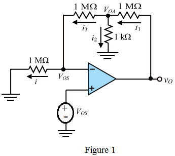
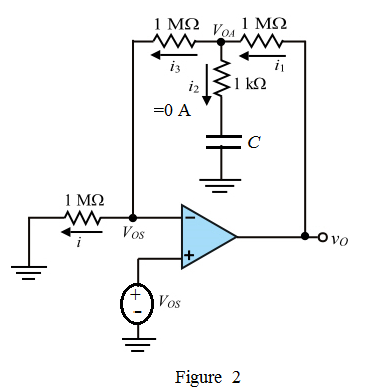

Apply the Kirchhoff’s current law at the node  .
.
Substitute for  .
.
Substitute for  .
.
Therefore, the value of output offset voltage,  is .
is .
Refer to Figure P2.102 in the textbook.
Redraw the circuit in Figure P2.102 for simplicity, to find the effect of the input offset voltage on output, by short the input voltage source.

The op-amp draws the current of zero amperes into its input terminals and the voltage at the inverting and non-inverting terminals are equal .
Apply Kirchhoff’s current law at node .
Apply the Kirchhoff’s current law at the node .
Substitute for .
Substitute for .
Therefore, the value of output offset voltage, is .
Calculation of output offset when the input is ac coupled through the capacitor.
As the capacitor is connected, because of it offers infinite impedance to the input. Therefore, the current, .
As the op-amp draws no current into its input terminal, the current is equal to the  which is equal to the zero amperes.
which is equal to the zero amperes.
That is,
Apply the Kirchhoff’s current law at the node  .
.
Since, the voltage at node  is equal to the
is equal to the  . Now substitute
. Now substitute  in place of
in place of  .
.
Therefore, the value of output offset voltage,  is .
is .
 resistor.
resistor. 
As the capacitor is connected in series with the resistor,  , because of capacitor offers infinite impedance to the input. Therefore, the current, .
, because of capacitor offers infinite impedance to the input. Therefore, the current, .
Apply the Kirchhoff’s current law at the node  .
.
Substitute for  .
.
Therefore, the value of output offset voltage,  is.
is.